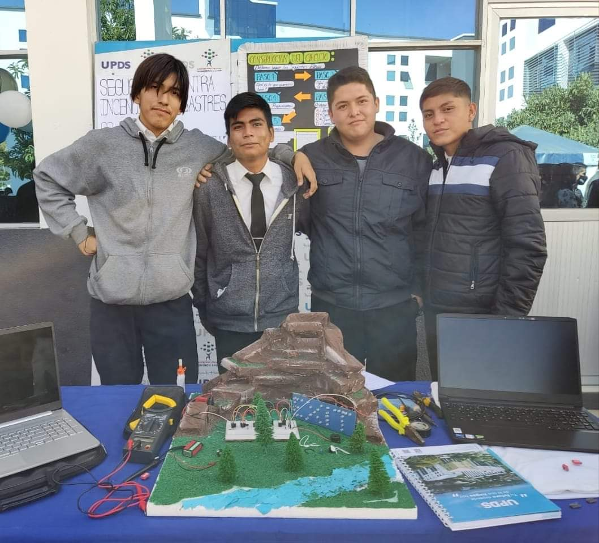

DOMOTICA-HOUSE
Es una casa automatizada, es decir, trabaja a base de sensores que permiten la identificacion de un factor y actúan, de acuerdo, a sus requerimientos.
Es una casa automatizada, es decir, trabaja a base de sensores que permiten la identificacion de un factor y actúan, de acuerdo, a sus requerimientos.